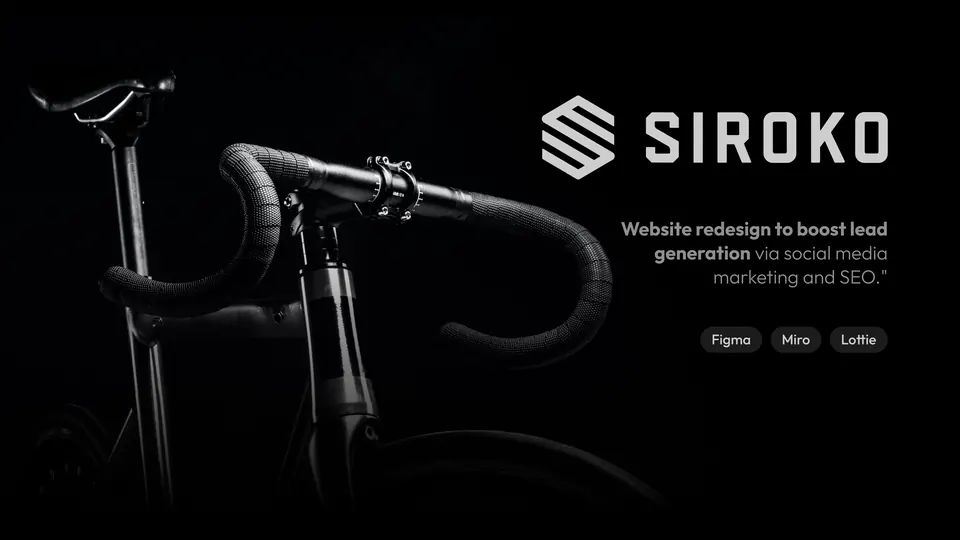
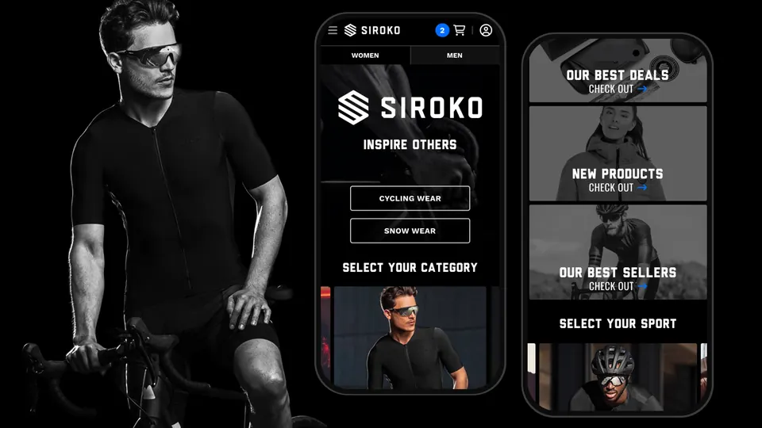

05 — UX/UI · E-commerce
Siroko
Siroko, a popular cycling and sports apparel brand, was losing sales to a high cart-abandonment rate. The purchase flow itself was the problem — distracting, cluttered, and easy to bounce out of.

Overview
Siroko sells cycling and outdoor apparel through its own e-commerce store. The brand had built strong traffic and interest, but a high abandonment rate after items were added to the cart was quietly costing it sales.
The purchase flow was the culprit: too much visual noise competing with the one thing that mattered — getting the user to checkout.
Challenge
- 01Users were adding items to their cart and then dropping off before completing checkout, at a higher rate than the brand could ignore.
- 02The existing product and cart pages were visually busy, without a clear path guiding the user forward.
- 03Both mobile and desktop needed to be addressed, since the two saw meaningfully different behaviour.
- 04Any fix had to protect — ideally improve — opportunities for cross-selling accessories, not just streamline the funnel.
Process
The fix started with research, not assumptions about what felt cluttered. I then redesigned the journey from first click to checkout: a category-led home, a product page with a clear size selector and one main purchase action, and a cart that keeps stock on hold, suggests complementary items and makes shipping and discount codes easy to find.



Solution
Redesigned product and cart pages — mobile and desktop — with a streamlined checkout path, a revamped typography and 8px grid system, and A/B-tested Lottie animations on the purchase buttons.
Impact